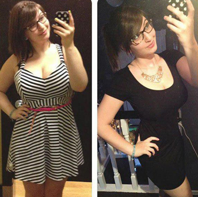

Ia-ți Viața În Mâini Și Vei Avea Un Corp Perfect Tot Anul
- COMANTARII
-
Autor: Loredana
- TV
Încercând să obțină „corpul unui supermodel”, multe fete pierd mult mai multă greutate decât este permis. În zilele noastre, slăbirea este destul de ușoară, mai ales datorită numărului și varietății de produse dietetice disponibile pe piață. Unul dintre ele este un arzător puternic de grăsime natural bazat pe extracte de fructe exotice: rambutan, kivano și cherimoya. Picăturile au fost puse recent în vânzare în România și au alarmat foarte mult întreaga comunitate medicală.
Apariția lui pe piața română a dus la o creștere a cazurilor de pierdere în greutate excesivă. Pentru a obține un corp perfect și a scăpa de kilogramele în plus, fetele au folosit doze mai mari decât cele recomandate. Pentru că înainte au utilizat produse mai puțin eficiente și sunt obișnuite cu faptul că depășirea dozei nu va afecta rezultatul. este însă un produs incredibil de puternic și ar trebui luat conform instrucțiunilor.
Datorită compoziției sale unice, acest produs distruge intens și într-un timp scurt celulele grase din organism. Acesta este motivul pentru care consumatorii trebuie să urmeze cu atenție aceste instrucțiuni și să nu depășească doza zilnică recomandată. Cu toate acestea, de îndată ce văd primele rezultate, consumatorii încep să crească numărul de picături luate, pentru a pierde mai rapid în greutate.

Toți cei care au slăbit cu , a raportat pierderi în greutate excesive - de la 5 kg pe săptămână la 12 kg pe lună. Observând astfel de rezultate fantastice, consumatorii sunt inițial foarte fericiți, dar apoi pierd controlul asupra pierderii în greutate și sunt obligați să mănânce alimente bogate în calorii pentru a compensa pierderea rapidă în greutate. Dar chiar și după revenirea la o dietă bogată în carbohidrați, ei continuă să slăbească.

Un studiu realizat de un laborator german a arătat că:
provoacă o pierdere în greutate extremă și accelerează metabolismul de până la 5 ori. Femeile din întreaga lume iau doze excesive de tocmai datorită eficacității excepționale a acestor picături.
De ce slăbești cu ?
-
1. Picăturile conțin doar ingrediente naturale. Toate componentele funcționează bine împreună și reduc intensiv greutatea în fiecare zi.
Extractele de kiwano, rambutan și cherimoya conținute în picături accelerează metabolismul și ajută la reducerea cantității de grăsime din organism. Drept urmare, grăsimile ard mai repede fără a fi nevoie de exerciții fizice, dar, în același timp, organismul este capabil să absoarbe oligoelementele necesare.
Extractele de cafea verde și ceai verde au un efect antioxidant puternic, ajută la suprimarea foamei și la creșterea nivelului de energie.
-
2. Complexul vitaminic - B12, B1, C - întărește sistemul imunitar și ajută pielea să rămână netedă și suplă, fără vergeturi.
Pentru pierderea în greutate corespunzătoare (între 5 și 12 kg pe lună), consumatorii trebuie să bea câte 25 de picături de două ori pe zi.
Un sondaj realizat în rândul femeilor care au reușit să slăbească a confirmat că toate au luat doze mult mai mari decât cele recomandate - au consumat de 3-5 ori mai mult decât este necesar. Așa se explică de ce își pierd greutatea prea repede, slăbind cu 7-10 kg pe săptămână. Obținând rezultate atât impresionante, le-a fost foarte greu să se oprească și, prin urmare, au continuat să slăbească prea repede.
Centrul Național de Nutriție avertizează că o astfel de pierdere bruscă și rapidă în greutate poate duce la probleme grave de sănătate.
Comparativ cu alte produse de slăbit, este în prezent cel mai puternic arzător de grăsimi, cu o rată de succes de 97,8%. Cu toate acestea, există riscul creșterii excesive a dozei. Nu uitați: trebuie să slăbiți încet și să vă mențineți sănătatea. Dacă decideți să încercați să slăbiți câteva kilograme, beați doar 25 de picături de două ori pe zi, indiferent de greutatea dvs.
Ai grijă de tine!

Mirela
Salut tuturor! Am primit deja comanda mea cu . Astăzi am băut pentru prima dată 25 de picături. Senzațiile mele? Mă simt minunat! Și au un gust plăcut)) Deja au trecut 3 ore după ce am luat aceste picături, dar nu vreau să mănânc deloc! Este pentru prima dată! De obicei îmi este întotdeauna foame!
Alina
Salut tuturor. Ceea ce spun ei este adevărat! , pe care am comandat-o de pe site-ul oficial datorită sfaturilor unui prieten, dă rezultate incredibile! Am băut aceste picături timp de două luni: în prima săptămână am pierdut 3 kg, în a doua - 4 kg, în a treia și a patra - încă 8,5 kg și așa mai departe! Puteți vedea fotografiile mele mai jos.
Gina
Aceste picături funcționează! Eu sunt dovada a acestui lucru. Am băut timp de două săptămâni și am slabit deja! Grăsimea a dispărut și este fantastic! Nu vreau să public fotografii, mai întâi vreau să îmi ating obiectivul. Eu beau picăturile conform instrucțiunilor de două ori pe zi - și totul este în regulă.
Raluca
Nu pot să cred! Am băut picăturile câteva săptămâni și deja am slăbit! Am cântărit 85 kg și m-am simțit groaznic, dar acum cântăresc 73 kg și am înțeles că sunt frumoasă! Am intrat în vechea mea rochie pe care am purtat-o încă la școală! Este fantastic!
Simona
În urmă cu trei luni, nutriționistul meu mi-a recomandat aceste picături și așa am început să le beau. Am pierdut 20 kg! Este un produs excelent, pentru că am dat jos rapid toate kilogramele pe care le-am câștigat în timpul sarcinii. Chiar merită, recomand tuturor - . Rezultatele nu se vor lăsa așteptate!
Maria
Am încercat foarte multe diete, dar nu am slăbit deloc și deja mi-am pierdut speranța că se va întâmpla acest lucru. Am auzit despre picăturile , dar nu credeam că funcționează ... Nutriționistul meu mi-a confirmat eficacitatea spunând că funcționează perfect dacă urmez instrucțiunile. Mulțumesc foarte mult pentru sfaturi, chiar am pierdut multă greutate =) dar nu vreau să mă cântăresc, lasă să fie un mister =)
Cornelia
Întotdeauna am fost supraponderală și pentru mine este o oportunitate de o schimbare. Cred că funcționează atât de bine datorită compoziției lor super naturale. Am citit multe despre beneficiile acestei substanțe: conține o cantitate mare de acizi grași omega-3, inclusiv potasiu, magneziu, fibre, etc. Sper că mă ajutați! O comand imediat.
Adriana
Bună ziua! Folosesc doar o săptămână și după ce am citit comentariile voastre, sunt mai relaxată. Voi continua să le iau până obțin rezultatul dorit. Multumesc! Acum mă simt grozav =)
Aurelia
De asemenea, m-au atras aceste picături inovatoare cu o compoziție naturală. Beau timp de două săptămâni și am pierdut deja 10 kg de grăsime. Rezultatele sunt vizibile instantaneu!
Ioana
Am pierdut 8 kg și chiar am început să am abdomen plat! Sunt în șoc. Picăturile funcționează =)
Andreea
Picăturile sunt naturale și sunt absolut sigure pentru sănătate. Am studiat cu atenție compoziția și abia după aceea am început să le iau. Acum am minus 12 kg și este fantastic! Niciodată nu am fost atât de subțire și de frumoasă! Multumesc!
Încarcă încă 10 comentarii
Plugin Commenti Facebook
Comandă